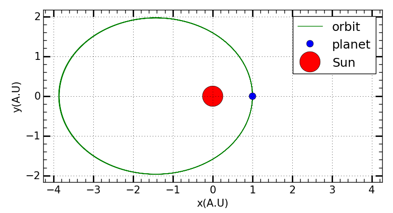

The simulation of a planet orbits around the Sun is a very good practice to understand the solution to partial differential equation.
Starting equation
The balance between gravity and centrifugal force determines the orbit of a planet circling around the Sun. Here the most simple but yet useful Newton’s gravitational law in the 2D vector form is used.
pylab.close('all') # ------ define difference form of orbit equations def orbit_diff(x, y, vx, vy, dt): GM = 1 r = numpy.sqrt(x*x+y*y) x1 = x + vx*dt y1 = y + vy*dt vx1 = vx - GM*x/(r**3)*dt vy1 = vy - GM*y/(r**3)*dt return x1, y1, vx1, vy1
# ------ make a time evolution calculation # set initial values for these data t0 = 3 dt = 0.0001 vx0 = 0 vy0 = 1.8*0.7 x0 = 1 y0 = 0
x = x0 y = y0 vx = vx0 vy = vy0 i = 0 N = 1000000 x_array = numpy.linspace(0, 0, N) y_array = numpy.linspace(0, 0, N) t = numpy.linspace(0, 0, N)
for i in range(0, N) : x_array[i] = x y_array[i] = y x, y, vx, vy = orbit_diff(x, y, vx, vy, dt) t[i] = t0 + i*dt i = i + 1
t_array = numpy.linspace(0, N - 1, N)*dt
# ------ plot planet orbit out # pylab.close() pylab.figure() ax = pylab.subplot(111) pylab.plot(x_array, y_array, '-', color = 'green', markersize = 3) # mark the position of sun pylab.plot(x0, y0, 'o', markersize = 10) pylab.plot(0, 0, 'o r', markersize = 30) pylab.legend(['orbit', 'planet', 'Sun']) pylab.xlabel('x(A.U)') pylab.ylabel('y(A.U)') ymax = numpy.max(numpy.abs(y_array))*1.1 xmax = numpy.max(numpy.abs(x_array))*1.1 pylab.xlim([-xmax, xmax]) pylab.ylim([-ymax, ymax]) plot_lib.single_plot_paras() ax.set_aspect('equal', 'box') pylab.show()
Simulation result see this figure

Attention: the choice of dt apparently affect the accuracy of the orbit simulation. Small dt results in good accuracy but increases the calculation time.
Orbit of many planets
In a real star system, there might be mnay planets orbiting around a main star. Thus we should consider the realistic condition of many planets and even the interaction between the planets should be considered.
2 planets orbiting
Here we consider the interaction between two planets but still fix the main star in the system. The forces act on planet 1 and planet 2 are like this:
def orbit_diff_2(x, y, vx, vy, X, Y, VX, VY, dt) : GM = 1 Gm1 = 10**-2 Gm2 = 3*10**-2 r = numpy.sqrt(x*x + y*y) R = numpy.sqrt(X*X + Y*Y) r12 = numpy.sqrt((x-X)**2 + (y - Y)**2) r21 = r12 x2 = x + vx*dt y2 = y + vy*dt X2 = X + VX*dt Y2 = Y + VY*dt vx2 = vx - GM*x/(r**3)*dt - Gm2*(x - X)/(r12**3)*dt vy2 = vy - GM*y/(r**3)*dt - Gm2*(y - Y)/(r12**3)*dt VX2 = VX - GM*X/(R**3)*dt - Gm1*(X - x)/(r21**3)*dt VY2 = VY - GM*Y/(R**3)*dt - Gm1*(Y - y)/(r21**3)*dt return x2, y2, vx2, vy2, X2, Y2, VX2, VY2 # set start position and speed of planet 1 x = x0 y = y0 vx = vx0 vy = vy0 i = 0 N = 1000000 x_array = numpy.linspace(0, 0, N) y_array = numpy.linspace(0, 0, N) t = numpy.linspace(0, 0, N) # set start position and speed of planet 2 X0 = 2 Y0 = 0 X = X0 Y = Y0 VX = 0 VY = 0.9 X_array = numpy.linspace(0, 0, N) Y_array = numpy.linspace(0, 0, N) # perform loop simulation for i in range(0, N) : x_array[i] = x y_array[i] = y X_array[i] = X Y_array[i] = Y x, y, vx, vy, X, Y, VX, VY = orbit_diff_2(x, y, vx, vy, X, Y, VX, VY, dt) i = i + 1 t_array = numpy.linspace(0, N - 1, N)*dt # ------ plot planets orbit out # pylab.close() pylab.figure(figsize = (10, 5)) ax = pylab.subplot(111) pylab.plot(x_array, y_array, '-', color = 'green') pylab.hold('on') pylab.plot(X_array, Y_array,'--', color = 'black') # mark the position of sun pylab.hold('on') pylab.plot(x0, y0, 'o', color = 'green', markersize = 10) pylab.hold('on') pylab.plot(X0, Y0, 'o', color = 'black', markersize = 15) pylab.hold('on') pylab.plot(0, 0, 'o r', markersize = 30) pylab.legend(['orbit 1', 'orbit 2', 'planet 1', 'planet 2', 'Sun'], frameon = 'false') pylab.xlabel('x(A.U)') pylab.ylabel('y(A.U)') ymax1 = numpy.max(numpy.abs(y_array))*1.1 xmax1 = numpy.max(numpy.abs(x_array))*1.1 ymax2 = numpy.max(numpy.abs(Y_array))*1.1 xmax2 = numpy.max(numpy.abs(X_array))*1.1 Ymax = numpy.max([ymax1, ymax2]) Xmax = numpy.max([xmax1, xmax2]) ylab.xlim([-Xmax, Xmax]) pylab.ylim([-Ymax, Ymax]) plot_lib.single_plot_paras() ax.set_aspect('equal', 'box') pylab.tight_layout() pylab.show()
Simulation results shows that for planet mass much smaller than the central star, the interaction between planets rally change their orbits.
For the case when the planet mass is close to the mass of the central star, the interaction between planets will disturb their orbits.
Simulation of many planets
Under this condition, the interaction between planets will be replaced by a gravity potential.
Newton’s Gravitational Force and Kapler’s Law of Planet Orbit
The above works are just numerical simulations, but the physics behind it is not understand clearly. Eg, why following the Newton’s law, the simulated planet orbit should be an elliptic? The simulation results only tells you the resulted orbit is an elliptic but it does not tell you why the orbit is an elliptic. To solve this puzzle, analytic analysis of orbit equation should be conducted.
Gravitational Force in the polar coordinate
dt2d2r⃗=−GMr3r⃗
Then we apply the polar coordinate with r⃗=rer⃗, dtder⃗=dtdθeθ⃗=ωeθ⃗ and dtdeθ⃗=−ωer⃗. With these rules, the vector form of Gravitation force can be simplified as:
From the above equation(b) we can get: 2dtdrω+rdtdω=0⇒ω(ωdrdt+2rdtdω)=dtd(r2ω)=0, which means r2ω=constant. This should be the proven of Kapler’s second law, the sweep area by the line linking the planet and the Sun is the same in equal time interval, where dtdS=dtd(1/2r2ω)=0⇒dS/dt=0.
{width=200px}
Proof of Kapler’s First Law
Start from equation I(a), dt2d2r−rω2+GMr21=0. Using the second law of Kapler r2ω=C and replace ω with r, we can get dt2d2r=Cr31−GMr21.
If we perform a smart transform as: dt2d2r=dtdrdrd(dtdr)=1/2drd((dtdr)2), then equation I(a) can be rewritten as: 1/2drd((dtdr)2)=Cr31−GMr21.
Perform an integration over r we can further get: (dtdr)2=2GMr1−Cr21+D.
Then we introduce r as a function of θ as r=r(θ) and get: dtdr=dθdrdtdθ=ωdθdr and consider Kapler’s second law, the previous equation can be rewritten as: (dθdr)2r4C2=2GMr1−Cr21+D.
Then we introduce a transform as u=1/r⇒du=r2−1dr and the previous equation can be rewrite in this form: (dθdu)2=A+Bu−Cu2⇒dθdu=±√A+Bu−Cu2. It can be easily found that dθdu<0, which means dθdu=−√A+Bu−Cu2.
Now we get √A+Bu−Cu2−du=dθ⇒∫√A+Bu−Cu2−du=∫dθ. In the case √A+Bu−Cu2=E√1−(Eh−u)2. Then the function can be written as: ∫√1−(Eh−u)2d(Eh−u)=∫dθ⇒arccos(Eh−u)=θ+H, considering initial condition we can get H=0. Further perform a cos operation on the whole equation we can get:
Eh−u=cos(θ), then we replace u with 1/r and get: r=h−Ecos(θ)1 which is just the equation of elliptic in polar coordinate.
Proof of Kapler’s Third Law
Start from equation I(a), dt2d2r−rω2=−GMr21, we take an extreme condition by take the point near the longer leg of the orbit of a planet, where the change on radius is zero dtdr=0, which will simplify the above equation as: −rω2=−GMr21, then we can get r13ω12=r23ω22=GM⇒T12R13=T22R23=constant, which is the proof of Kapler’s third law. Be careful that this is only an approximation of the real condition.
 {width=200px}
{width=200px}